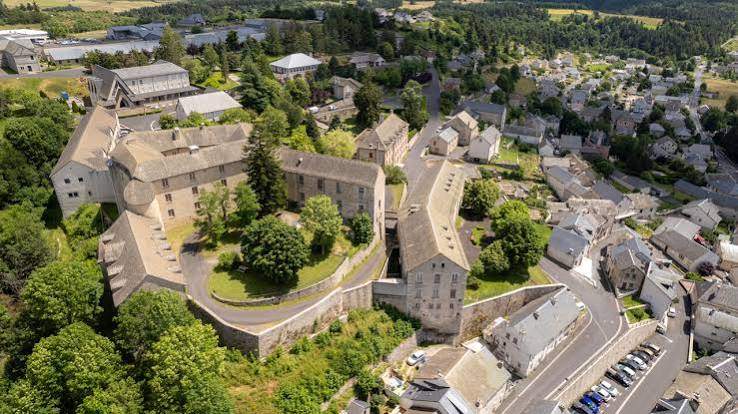
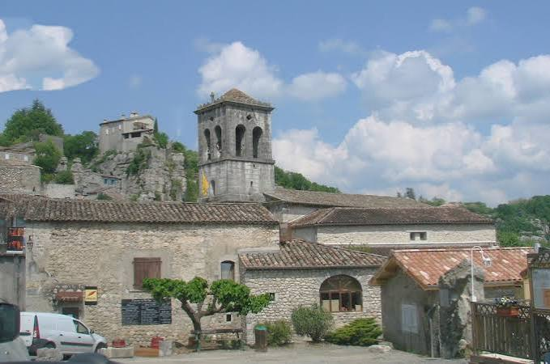

Sur la Via Podiensis, l'un des chemins de Saint-Jacques-de-Compostelle, le château de Saint-Alban occupe un site d'implantation fort ancienne : mentionné dès le XIIe siècle, il succède sans doute à une forteresse plus ancienne encore. Dès le XIIIe siècle, la puissante maison d'Apcher s'installe dans ce château fortifié, qui se transforme peu à peu en demeure seigneuriale, avant d'être occupé par les envahisseurs anglais au siècle suivant, aux heures troubles de la guerre de Cent Ans.

Le château Renaissance de grès rose, aujourd'hui Office de Tourisme
Reconstruit au XVe siècle dans un style Renaissance, le château est remanié à plusieurs reprises avant qu'en 1740, à la mort du dernier baron de Canilhac, Pierre-Charles, marquis de Morangiès, n'achète le titre de baron : Saint-Alban devient alors le siège de cette baronnie. Quelques décennies plus tard, durant la seconde moitié du XVIIIe siècle, une bête féroce sème la terreur dans la région : le château devient l'un des points de ralliement pour organiser, en 1764, les battues visant à traquer la tristement célèbre Bête du Gévaudan.
Mais c'est au XIXe siècle que Saint-Alban bascule dans une tout autre histoire : en 1821, Joseph Tissot, dit frère Hilarion, rachète le château pour y fonder un hospice destiné aux aliénés. L'établissement devient asile départemental par ordonnance royale du 19 janvier 1825, avant de connaître, au XXe siècle, un développement qui fera de lui un lieu majeur, à l'échelle internationale, de l'histoire de la psychiatrie.
🏰
Visite pratique

La cour intérieure Renaissance du château
⏱️
Durée
Environ 1h30 avec le parcours historique
📊
Difficulté
Facile, parcours balisé dans le village et ses abords
🚗
Accès
Massif de la Margeride, à 950 m d'altitude
🎟️
Tarif
Cour du château libre, Scénovision payant sur réservation
✦ Infos pratiques
Château de grès rose Cour Renaissance visitable, intérieur fermé au public, siège de l'Office de Tourisme
Le Scénovision Parcours-spectacle immersif conté par Auguste, facteur du village
Cimetière des fous Lieu de recueillement, vestige de l'ancien hôpital psychiatrique
Chapelle de l'hôpital Façade triangulaire spectaculaire, haut lieu de mémoire
Église romane Édifice ancien du bourg, étape du parcours historique
Rue de l'Hôpital Bureau d'information touristique, point de départ des visites
Parcours historique Circuit balisé à travers le village et son patrimoine
Panorama Vue dégagée sur les monts de la Margeride depuis les hauteurs du bourg
1
Le château et sa cour Renaissance
Bâti en grès rose, remanié à la Renaissance, le château abrite aujourd'hui l'Office de Tourisme et accueille en saison expositions et spectacles dans sa belle cour intérieure.
2
Le Scénovision
Ce parcours-spectacle immersif, dans un décor rétro et plein de charme, fait revivre l'histoire fascinante du village racontée par Auguste, facteur sur le point de partir à la retraite.
3
Le cimetière des fous
Ce lieu de recueillement, vestige de l'ancien hôpital psychiatrique, témoigne de l'accueil réservé ici aux malades comme aux réfugiés durant la Seconde Guerre mondiale.
4
La chapelle de l'hôpital
Reconnaissable à sa façade triangulaire spectaculaire et ses hautes toitures d'ardoises, elle fait partie des bâtiments hospitaliers récemment protégés au titre des Monuments historiques.
5
Le parcours historique du village
Ce circuit balisé mène des ruelles du bourg jusqu'à l'église romane, en passant par les principaux témoins de l'histoire mouvementée de Saint-Alban.
🏆
Reconnaissance & patrimoine
🏰
Château, Monument historique
Le château de Saint-Alban, remarquable témoin de l'architecture Renaissance en grès rose, est classé Monument historique depuis 1942.
MH depuis 1942
🧠
Berceau de la psychothérapie institutionnelle
L'ancien hôpital psychiatrique de Saint-Alban est internationalement reconnu comme le lieu de naissance, après-guerre, de la psychothérapie institutionnelle.
Renommée internationale
📜
Bâtiments hospitaliers inscrits en 2023
Par arrêté préfectoral du 26 janvier 2023, plusieurs bâtiments de l'ancien asile (chapelle, bâtiment de l'administration, cimetière des fous) ont été inscrits aux Monuments historiques.
MH depuis 2023
🎨
Foyer de l'Art brut
Plusieurs créateurs d'Art brut reconnus par Jean Dubuffet, dont Auguste Forestier et Marguerite Sirvins, ont produit leurs œuvres au sein de l'hôpital de Saint-Alban.
Art brut
🧠
Psychiatrie, résistance et Art brut
Durant la Seconde Guerre mondiale, l'hôpital de Saint-Alban devient un refuge autant qu'un foyer de résistance : y séjournent notamment les poètes Paul Éluard et Tristan Tzara, protégés dans ce coin reculé de la Margeride, tandis que l'établissement accueille aussi bien des malades que des réfugiés politiques et juifs pourchassés par le régime de Vichy. C'est aussi à Saint-Alban qu'en 1940, fuyant l'Espagne franquiste, le psychiatre catalan François Tosquelles trouve refuge auprès du docteur Paul Balvet : contraint de repasser tous ses examens de médecine, il exerce d'abord comme simple infirmier avant de transformer durablement l'établissement.
Un asile à l'abri de la folie du monde : c'est dans ce lieu reculé que des médecins engagés dans la Résistance ont posé les bases d'une psychiatrie nouvelle, ouverte et humaine.
— d'après les témoignages sur l'histoire de l'hôpital de Saint-Alban
Aux côtés de Tosquelles, des noms devenus références de la psychiatrie française œuvrent à Saint-Alban : Lucien Bonnafé, Jean Oury ou encore, plus brièvement, Frantz Fanon. Ensemble, ils posent les bases de la « psychothérapie institutionnelle », qui fait de la vie collective et du travail un vecteur de soin. L'hôpital devient également un foyer de création artistique : plusieurs patients, dont Auguste Forestier, Marguerite Sirvins ou Clément Fraisse, y produisent des œuvres aujourd'hui reconnues comme des pièces majeures de l'Art brut, ce courant que le peintre Jean Dubuffet contribuera à faire connaître.
💬
Le saviez-vous ? Anecdotes albanaises
🐺
Un point de ralliement contre la Bête
En 1764, le château de Saint-Alban devient l'un des lieux de rassemblement pour organiser les battues contre la Bête du Gévaudan, qui sema la terreur dans la région durant plusieurs années.
💸
La ruine du frère Hilarion
Humaniste plus que gestionnaire, le frère Hilarion Tissot se ruine rapidement en fondant l'hospice pour aliénés : c'est finalement le préfet de la Lozère qui rachète le château pour y créer l'asile départemental.
💧
Sans eau ni électricité jusqu'en 1933
Jusque dans les années 1930, patients et personnel de l'asile vivaient dans des conditions rudimentaires, sans eau courante ni électricité, avant les travaux entrepris par la doctoresse Agnès Masson.
✒️
Le poète réfugié
Caché à Saint-Alban sous un pseudonyme, Paul Éluard y composa plusieurs textes, avant de devoir se replier sur Saint-Flour pour continuer d'imprimer clandestinement ses œuvres de résistance.
📍
Aux alentours
Le Malzieu-Ville Plus Beau Village de France depuis 2021, ses remparts, ses tours et sa fête médiévale de mai en font une étape incontournable de la Margeride.
Tour d'Apcher donjon de 18 mètres offrant un panorama splendide sur les monts de la Margeride, à proximité du Malzieu.
Grandrieu autre village de granit et de lauzes du plateau margeridien, à une trentaine de minutes.
Parc des Loups du Gévaudan la plus grande réserve de loups d'Europe, sur les terres mêmes où sévit jadis la Bête du Gévaudan.
Lac de Naussac le plus grand plan d'eau de Lozère, entre activités nautiques et détente au fil de l'Allier.
Châteauneuf-de-Randon village où mourut le connétable Bertrand du Guesclin en 1380, aux confins de la Margeride.